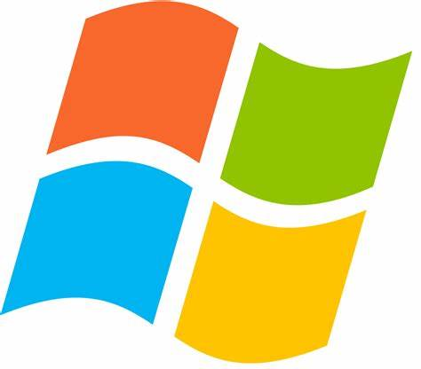

Bill Gates
Bill Gates, nascido em 28 de outubro de 1955, é um empresário e filantropo americano, cofundador da Microsoft. Desde jovem, mostrou interesse por computadores e, em 1975, fundou a empresa com Paul Allen. A Microsoft começou desenvolvendo software e, em 1985, lançou o Windows, que transformou a interface dos computadores e os tornou mais acessíveis.

Gates teve um papel importante na popularização dos PCs e sua visão de um "computador em cada mesa" moldou a indústria de tecnologia. Sob sua liderança, a Microsoft dominou o mercado de sistemas operacionais, especialmente com o Windows.


Além de seu impacto tecnológico, Gates é conhecido por seu trabalho filantrópico por meio da Fundação Bill e Melinda Gates, que atua em saúde, educação e combate à pobreza. Embora admirado por suas inovações, também enfrenta críticas por práticas monopolistas. Seu legado continua a influenciar tanto a tecnologia quanto as questões sociais e econômicas.